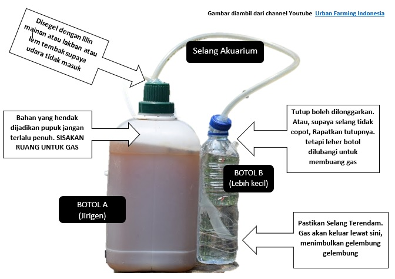

Cara Pembuatan Pupuk Organik
Proses pembuatan pupuk organik dilakukan melalui tahap fermentasi
bahan-bahan alami hingga terurai sempurna. Berikut langkah-langkah
pembuatan pupuk organik menggunakan bahan-bahan yang telah disiapkan.
Pembuatan Pupuk Organik Cair
Pupuk organik cair dibuat melalui proses fermentasi menggunakan
bahan organik. Selama proses fermentasi, gas yang terbentuk perlu
dikeluarkan agar tekanan di dalam wadah tidak terlalu tinggi.

Rangkaian pembuatan pupuk organik cair menggunakan botol
dan selang akuarium.
Langkah-Langkah Pembuatan
-
Campurkan kotoran sapi kering, dedak, sekam bakar, dan dolomit
hingga merata.
-
Masukkan air secukupnya ke dalam ember, kemudian larutkan
molase hingga tercampur rata.
-
Siramkan larutan molase sedikit demi sedikit ke campuran bahan
sambil terus diaduk hingga merata.
-
Aduk campuran hingga memiliki kelembapan yang cukup,
yaitu tidak terlalu basah dan tidak terlalu kering.
-
Masukkan campuran pupuk ke dalam ember sebagai wadah
fermentasi, kemudian tutup menggunakan terpal.
-
Diamkan selama beberapa hari dan aduk campuran secara berkala
untuk menjaga proses fermentasi tetap berlangsung dengan baik.
-
Setelah proses fermentasi selesai, pupuk organik siap digunakan
atau dikeringkan terlebih dahulu untuk penyimpanan.
← Kembali ke Beranda